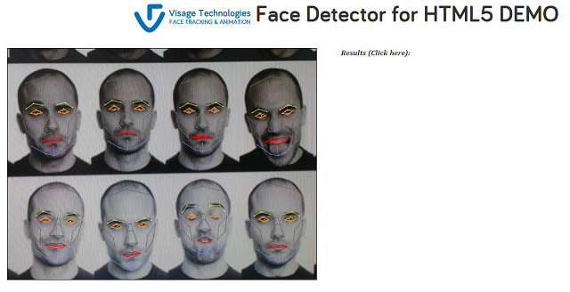

Face Detector sample uses the VisageSDK API to implement a simple application which demonstrates multiple face detection from a webcam.
The project must be installed on a web server in order to run (it can not run from a local disk). For a quick trial from Visage Technologies web server, click here.
To install the application on your own web server, upload folders lib and Samples to your web server. To run the application access the Samples/FaceDetector/sampleDetector.html page via a web browser.
Application will give licensing warning. Detection results will be drawn on screen but will not be available in a numeric format. To remove this limitation:
For further information please read licensing section of the documentation.

Face Detector is implemented in HTML and JavaScript using the VisageSDK API for face detection and native canvas methods for rendering.